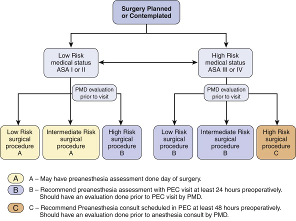

Preoperative
Preparation
Principles
The pre-op period is the most critical period to reducing surgical
complications and improving surgical outcomes
The ideal is pre-assessment clinics
- associated with enhanced outcomes, improved patient satisfaction.
Who should be seen at pre-ademission:

Pre-op Investigations
Lab
Testing
No longer the 'better safe than sorry' approach of doing many.
- no evidence that performing a standard set improves outcomes
Example of Minimal Pre-op Tests for
Elective Surgery
ASA I:
1-39yrs : nil, except pregnancy test & CBC if female
40-59yrs: add ECG.
>60yrs: CBC, Na, K, Cr, Urea, Gluc, ECG +/- CXR
ASA II:
- same as above + labs indicated by disease
- could argue for CXR for all smokers with >20pk-yr hx.
ASA III/IV:
- consider med/anaesthetic consult + appropriate work-up.
Other
Obviously if a procedure has a risk of blood loss a G&H /
X-match.
Coag tests if hx suggestive of bruising / bleeding problem.
Resp disease : ABG, spirometry.
Cardiac : CXR. ECG, echo, stress test if required.
Vascular : non-invasive vascular testing, check cardio / carotid
status.